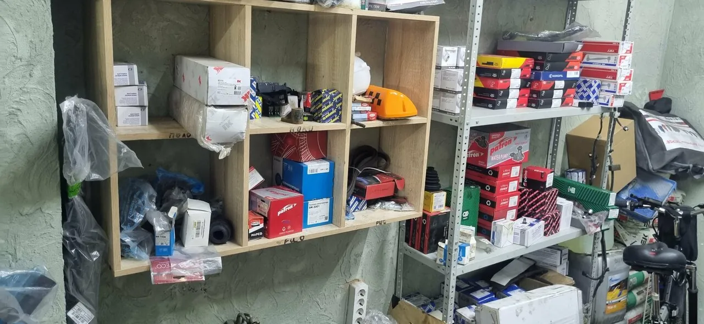
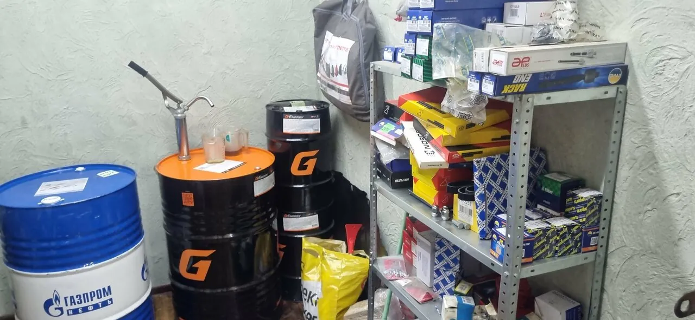
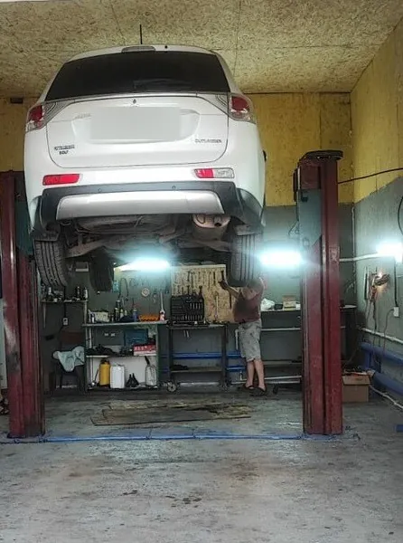
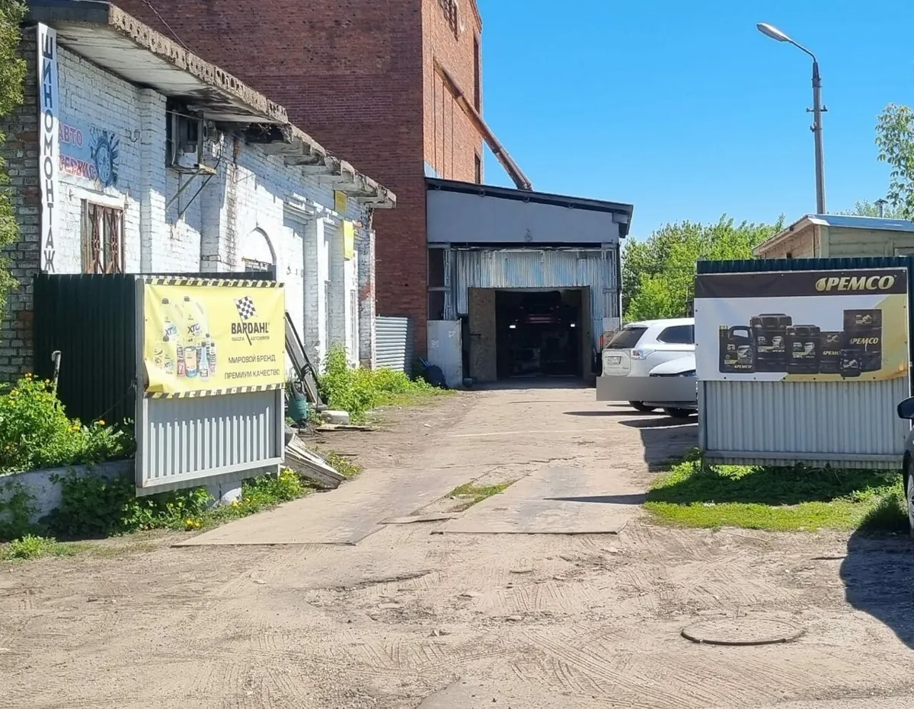

Ремонт двигателя и ГБЦ, замена ГРМ, топливная система, радиаторы.
как работаем
Одна поездка вместо трёх
Обычно так: сервис называет деталь, вы едете за ней в магазин или ждёте доставку, потом снова в сервис. Здесь всё в одних руках.
- 01Рассказываете, что с машиной
По телефону или на месте. Мастер смотрит и говорит, что нужно менять.
- 02Подбираем и заказываем запчасти
Многое есть в наличии, остальное закажут. «запчасти там же подобрали и заказали по отличной цене»
- 03Ставим здесь же
«Оказывается здесь еще можно заказать запчасти, все привезут, установят. Очень удобно и всегда подскажут!»
о ценах на запчасти
Клиенты сравнивали цены. Вот что они пишут
- «Так же заказываю у них запчасти , по цене дешевле чем у остальных .»Роман Мозжаков
- «Там можно и запчасти заказать, дешевле, чем в магазине.»Галина
- «Запчасти тоже у них заказывал оказалось дешевле чем у остальных.»Виктор С.


что делаем
От замены масла до ремонта АКПП
Всё из списка работ в карточке VAG Center на Яндекс Картах. Не нашли свою поломку – позвоните, скажут, возьмутся ли.
КПП, АКПП, РКПП, сцепление.
Ходовая часть, амортизаторы, восстановление рычагов, гидроусилитель руля.
Тормозная система, выхлопная система, удаление катализаторов.
Компьютерная диагностика, стартеры, генераторы.
Базовое и полное сервисное обслуживание, замена масла в двигателе и АКПП.
Шиномонтаж, установка фаркопа, сварочные работы.

без лишнего
Найдут причину и не навяжут лишнего
- «Прекрасный сервис, в котором точно определят "боль" вашей машины и не "на вялят" лишнего.»Сабина
- «все сделали, проконсультировали, не навязывали лишнее.»Дарья К.
- «Единственные в городе и НЕ за бешеные деньги помогли решить проблему!»Валерия Фил
Работают с корейскими, японскими и европейскими легковыми машинами. «запчасти на поло были в наличии»
цены и гарантия
Цену назовут по телефону
Стоимость зависит от машины и запчастей, поэтому её считают под вашу задачу: {{цены на основные работы}}. Гарантия на работы есть, условия: {{условия гарантии}}.
Позвонитьотзывы
Что говорят о нас наши клиенты
4,726 оценок и 17 отзывов на Яндекс Картах
Здравствуйте, прекрасный сервис , мастера отличные , ремонтирую машину только у них , советую !!! Так же заказываю у них запчасти , по цене дешевле чем у остальных .
Отличный сервис, можно заказать запчасти на месте, грамотные сотрудники, вежливые, индивидуальный подход к каждому клиенту, рекомендую всем 👍
Спасибо огромное ребятам! Приехала с проблемой на шиномонтаж, все сделали, проконсультировали, не навязывали лишнее. Оказывается здесь еще можно заказать запчасти, все привезут, установят. Очень удобно и всегда подскажут! Спасибо!!!
Прекрасный сервис, в котором точно определят "боль" вашей машины и не "на вялят" лишнего. Теперь только сюда
Отличный сервис, не в первый раз посещаю. Зч заказать дешевле чем на интернет площадках, многое в наличии
Отличный сервис и шиномонтаж, прльзуюсь не первый раз. Быстро и недорого сделали ТО, расходники заказали сами, я очень довольна.
В сервисе поменяли масло- быстро и недорого. Там можно и запчасти заказать, дешевле, чем в магазине.
Сделали хорошо. Запчасти тоже у них заказывал оказалось дешевле чем у остальных. Менял масло в двс и акпп
Отличный сервис . Запчасти быстро подобрали и масло поменяли. Не дорого и качественно
Большое спасибо ребятам из этого салона! Единственные в городе и НЕ за бешеные деньги помогли решить проблему! Очень Рада, что теперь есть место, в которое без проблем можно обратиться !
Отличный сервис , запчасти там же подобрали и заказали по отличной цене . Теперь если чинить машину или заказывать запчасти только туда!!!!
Все отлично сделали,запчасти на поло были в наличии,рекомендую
как найти
Колхозная, 12В
+7 (977) 470-11-34- ЧасыПн–Сб 9:00–17:00, воскресенье выходной
- АдресКоломна, Колхозная ул., 12В. Остановка «Городская больница» – 580 м
- Написать
- УдобстваОплата картой, парковка, предварительная запись
Ориентир: белое кирпичное здание с вертикальной вывеской «Шиномонтаж» и жёлтым баннером у въезда. Бокс – в глубине двора.

Открыть на Яндекс КартахМаршрут до Колхозной, 12В